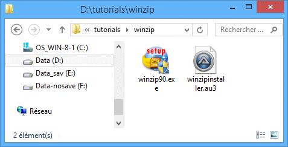

Этот урок показывает, как автоматизировать установку WinZip 9 SR-1. Предполагается, что вы уже знаете, как создавать и запускать скрипты AutoIt и использовать AutoIt v3 Window Info для чтения заголовков и текста окон, как показано в уроках HelloWorld и Notepad.
Установка WinZip состоит примерно из 10 диалоговых окон, в которых нужно нажимать кнопки (обычно Next) для продолжения. Мы напишем скрипт, который просто ждёт появления этих диалогов и затем нажимает нужные кнопки. Как и в обычных установках, заголовок окна каждого диалога один и тот же (WinZip Setup), поэтому мы должны использовать текст окна, чтобы различить диалоги. Будут предоставлены скриншоты каждого диалога, и вы можете нажать на изображение, чтобы увидеть результат AutoIt v3 Window Info для этого диалога.
Сначала создайте папку, которую мы будем использовать для установщика WinZip и файла нашего скрипта. Скопируйте установщик WinZip в эту папку и создайте пустой скрипт с именем winzipinstall.au3.

Теперь мы пройдём установку вручную и напишем скрипт по ходу. Строки скрипта для автоматизации каждого диалога будут показаны после каждого изображения (помните, нужно нажать на изображение, чтобы увидеть результат AutoIt v3 Window Info). Вы также можете посмотреть готовый скрипт для справки.
Первая строка скрипта простая – мы хотим запустить установщик winzip90.exe. Итак, первая строка:
Run("winzip90.exe")
Появится первый диалог:
Нам нужно дождаться появления этого окна и его активации, затем отправить комбинацию клавиш ALT-s, чтобы нажать кнопку Setup. Полученные строки скрипта:
WinWaitActive("WinZip® 9.0 SR-1 Setup", "&Setup")
Send("!s")
(Помните, нужно нажать на изображение, чтобы увидеть результат AutoIt v3 Window Info; это особенно важно, так как заголовок содержит специальный символ (R), который было бы сложно набирать).
Далее появится диалог выбора места установки:
Нам нужно дождаться, пока это окно станет активным, затем нажать ENTER, чтобы принять место установки. Строки скрипта:
WinWaitActive("WinZip Setup", "into the following folder")
Send("{ENTER}")
Далее появится диалог выбора компонентов WinZip:
Обратите внимание, что это окно имеет в точности такой же заголовок, как и первое окно – WinZip Setup – и на самом деле все диалоги установки имеют этот заголовок! Чтобы различить эти окна, мы должны также использовать текст окна – на каждом экране попытайтесь выбрать наиболее уникальный текст. В этом случае я выбрал WinZip features include. После появления окна мы захотим нажать ALT-n:
WinWaitActive("WinZip Setup", "WinZip features include")
Send("!n")
Далее появится диалог лицензии:
Дождитесь появления окна, затем нажмите ALT-y, чтобы принять соглашение:
WinWaitActive("License Agreement")
Send("!y")
Установка продолжается аналогичным образом для нескольких диалогов. Изображение каждого диалога показано вместе со строками скрипта, необходимыми для его автоматизации.
WinWaitActive("WinZip Setup", "Quick Start Guide")
Send("!n")
WinWaitActive("WinZip Setup", "switch between the two interfaces")
Send("!c")
Send("!n")
WinWaitActive("WinZip Setup", "&Express setup (recommended)")
Send("!e")
Send("!n")
WinWaitActive("WinZip Setup", "WinZip needs to associate itself with your archives")
Send("!n")
Это последний диалог установки. Обратите внимание, что кнопка Finish не имеет комбинации клавиш – к счастью, она является кнопкой по умолчанию в этом диалоге, поэтому мы можем просто нажать ENTER, чтобы выбрать её. Если бы это было не так, то нам пришлось бы нажимать TAB между элементами управления или, лучше всего, использовать функцию ControlClick.
WinWaitActive("WinZip Setup", "Thank you for installing this evaluation version")
Send("{ENTER}")
После установки WinZip автоматически запустится:
Мы просто ждём, пока появится основное окно WinZip, а затем закрываем его функцией WinClose.
WinWaitActive("WinZip (Evaluation Version)")
WinClose("WinZip (Evaluation Version)")
Вот готовый скрипт – заметьте, я добавил комментарии к каждому диалогу отдельно, что облегчает понимание и изменение в будущем (следующая версия WinZip может быть немного другой).
И всё! Запустите скрипт winzipinstaller.au3 и смотрите, как WinZip устанавливается всего за несколько секунд! Методы, использованные в этом уроке, можно применить для автоматизации установки большинства программ.
В качестве упражнения попробуйте переписать скрипт, но вместо использования функции Send (которая отправляет клавиши активному окну) для нажатия кнопок используйте ControlClick, что может быть намного надёжнее. Вам нужно будет прочитать о элементах управления, чтобы это сделать.